Radio-Detox
(Software Engineering Project)
by
Aaron Linder
12/10/2022
Course: Advanced Software Engineering
Table of Contents
Introduction
Use Case and their descriptions
User Requirements
System Requirements
functional requirements
nonfunctional requirements
System Architecture
Installation Instructions:
Conclusion
1. Introduction
In this document I will be outlining several parts of this section, in regards to the project named (RadioDetox referred to as “project”), which the first implies sound (Because events have sound), and Detox means to avoid or withdraw from toxicity, which is the intended design feature of the software. It is to have sound or meetings or conversations, with people who are like minded. In the first section I will include user functional and non functional requirements in natural language, as well as use case diagrams for two actors. Also will be included is system requirements, for figures I will include UML use case diagrams for two actors, as well as UML sequence diagrams for two separate use cases. I included a slightly larger font with intent of publishing a longer document for easy readability. Radio Detox (the app name), is an app to help people enhance their social life, to find house parties to have fun but at the same time using artificial intelligence to assist people in making personal connections with strangers in “in-person” social networking with people who have common interests. Many times I go to meetings or parties and have nothing in common with anyone else there, and it makes socialization difficult.
2. Use Cases and their descriptions
Use case Diagrams:
There is two separate kinds of users in this program. The first kind of user is a “Event Attendee” user. His only goal, is to find and event to keep him occupied and relieve boredom. Before he signs in, we want several things of information from him. We want to scan his driver’s license to make sure he/she is allowed to consume alcohol or tobacco which may be present at events. Also if it’s a minor individual he may need parental consent. Most websites just include a birthday. I may consider reformatting this program in a future iteration to that method. However this is more secure, similar to attending a social club such as “Green Street” in Greensboro, they do have security guard checking the ID. Once the sub-routine is satisfied (it’s not spoof proof yet), we will want his email and his password to save in the database so that we know what kind of interests that the Event Attendee has.
The Event Attendee has a few options, he can register and login; And fill out his profile. Most importantly his profile will allow him to match “his unique event attendee profile” to other events that are hosted.
The second Use case is the Event Host. The event host has similar options to the event attendee, mainly login and register, and filling out his profile. His profile is not necessarily used that much, unless he himself queries an event. He registers his event, and it shows up to everyone who is searching for events on the system. They then can send him an email, and he will respond using an external email program (probably outlook or another cellular app), an invitation to his event.
Use Case (2 Use Cases 1 graph)
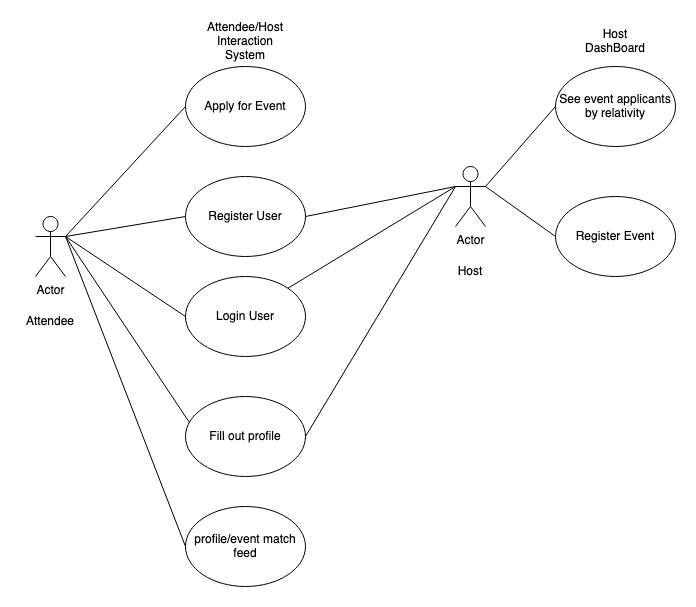
3. User Requirements
Actors: The program shall be able to assist two separate kinds of users.
The first type of user is an event host, the event host shall be able to use the program to host an event.
The second type of user is an event attendee, the event attendee shall be able to use the program to attend events.
Event Feed: A user host shall have a second registration form getting event location and time schedules.
Taste Profile: Each user shall have a taste profile that allows our recommender system to match event hosts and event attendees to events they are likely to want to see based on text mining the taste profiles, which will not be just keywords but are written in essays.
Personal Information Protection: The system shall not display a hosts personal information about an event until a login approval process takes place.
4. System Requirements:
Functional Requirements:
Logins: The system has a secure login, the user shall be able to sign up with a government issued ID (identification) which will use OCR (Optical Character recognition), to read the name off of the license with 65% precision (precision low to account for free API (application programming interface) OCR using Tesseract-OCR package designed by hewlett packard, and wrapped in pytesseract package.
Database Description: The system database layer shall have roles designated as a role table that has secondary keys in the form with `roles` table which determines which id in the `users` table has which distinct role, using secondary key association.
Event Feed: A user host shall have a second registration form getting event location and time schedules.
Taste Profile: Each user shall have a taste profile that allows our recommender system to match event hosts and event attendees to events they are likely to want to see based on text mining the taste profiles, which will not be just keywords but are written in essays.
AI Recommender System: The recommender system shall use _docsimilarity algorithms using high dimensional vector space to determine an event ranking system which shall display results on the on the event listings for the attendee users.
Access Control: The system shall have protected views using flask-security @loginrequired view that protects the view from unauthorized viewers.
Invitations: The party host may determine maximum occupancy of an event and invite as many people as wished accordingly
Welcome Screen: The event host user and event attendee users shall have two separate dashboards.
Non-functional Requirements:
API pricing: The second nonfunctional requirement is that the project shall only use free API’s for demonstration.
Installation: The software shall have a `requirements.txt` file which the software for white-box testing shall install all the backend packages except for WSGI which requires a different installation.
Packaging: This project has A LOT of libraries so it shall be necessary to make a packaged process for viewing and project deliverable for Winston-Salem State University, I am agnostic as whether to use docker or not because I know a lot of people use Microsoft or Linux machines and I am building on an apple which uses a combination of homebrew, pip, and npm (node.js/vue.js).
Frameworks: This project shall use prebuilt flask software packaged into many different sublibraries, and packages and micro-frameworks such as enferno (enferno.io a flask framework using security best practices).
Disabled Features: Email confirmation shall be disabled for this version. (Important! This required me to go into the library and disable a feature)
The system shall use vue.js to render the front end templates.
The templates shall be default stored in the /templates directory.
Flask-Security shall have overridden templates in the /templates/security directory
Link to Requirements.txt This is a link to all the modules (libraries in the system)
THIRD PARTY MODULES:
I will include for sourcing links to the methods I am calling in the libraries for the recommender system since it’s not all my code it’s heavily pieced together from libraries:
NLTKtokenizer : This tokenizes the words into single words and parse out the text boxes
Scipy.spatial.distance.cosine : This is a function I call in the end of the recommender system which gives us the similarity of the gloVe (Global Vectors models)
gloVe main page : This is the description of the model being used
There is a small amount of programming and configuration required for the recommender system, such as calling the name of the module and inputting the textboxes. I can submit an additional use case for more of the recommender system internals upon request. It has a document frequency counter of frequency of words that is built in, and creates global vectors for each document, and matches them to a cosine, and then the cosines are in a table of host and attendee emails and their similarities of their profiles. I have already setup input alt-blocks incase of the recommender system being thrown empty set data it will throw it out.
5. System Architecture
The system uses MVC architecture. There is a REST API using flask. The front-end uses vue.js. As you can see in the blow drawing, there is multiple links to other parts of the app in the file structure, relying primarily on run.py as the main executable into “app” file, and then, some of my functions pull int doc_similarity and doc comparison, there is a public and private blueprint from flask security determining which pages are public or private.
System Block Diagram:
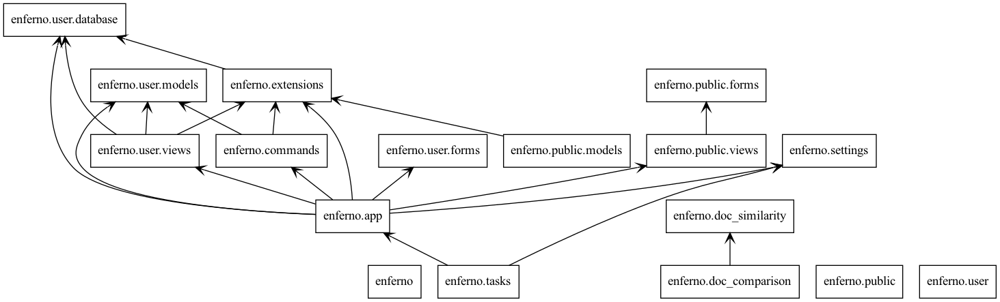
T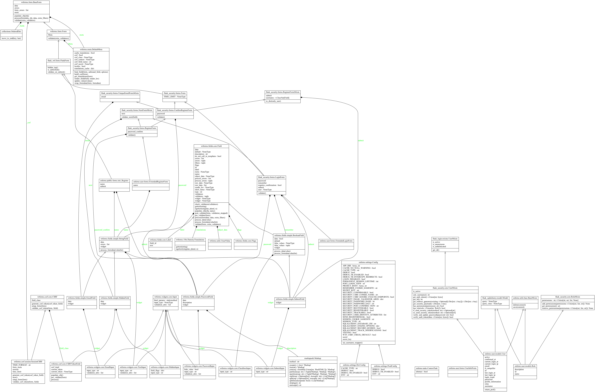 his is the UML framework of the security login and configuration logins with the form validations.
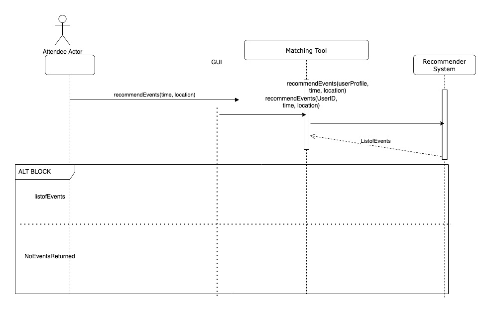
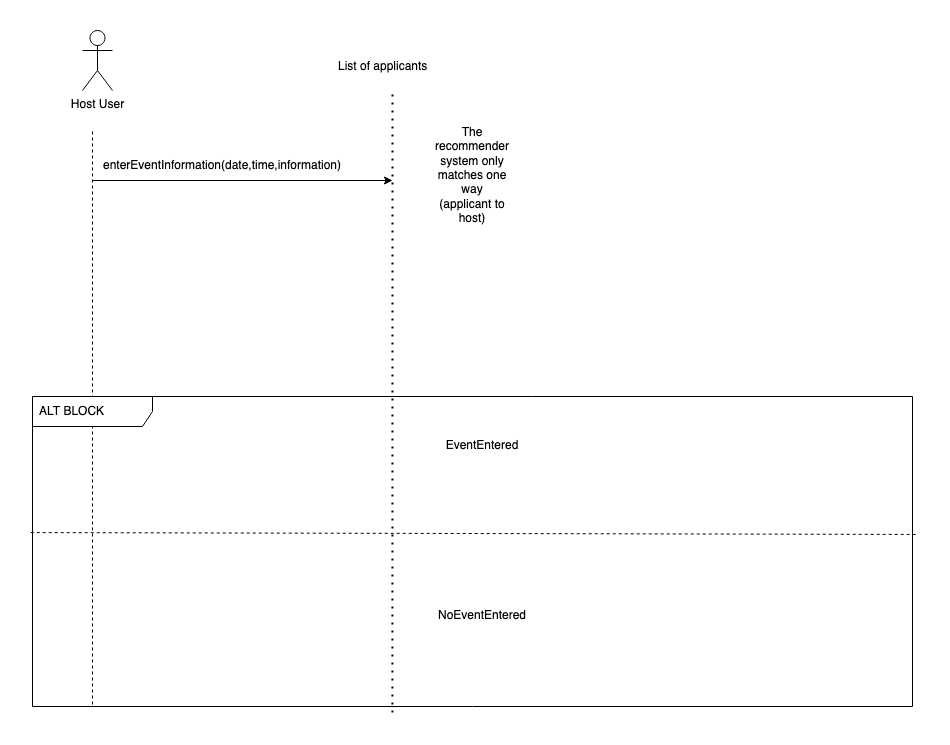
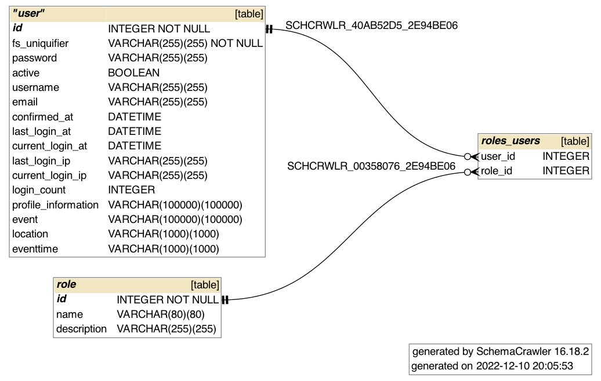
Here is the schema of the database:
6. Installation Instructions
This is a python heavily library sourced project. After downloading the code, install anaconda or miniconda. Anaconda is the package and environment manager to handle a lot of the files. (I have been advised by a duke professor not to use this program anaconda recently and only use virtualenv, this project still needs improvement.
Then install pip (if not installed already), once pip is installed in the main directory with run.py in the directory type in ```pip requirements.txt``` this will install all the packages required to run the program.
Install visual studio code
Then open up the command prompt in visual-studio Code, and type in ```conda env flaskEnv```,
then type in ```export FLASK_APP=run.py```,
and then type in ```flask run```. The system should take a few minutes to boot up. This is not a production environment so it is not a hosted website (it will be running on localhost).
In the main directory type in ```flask create_db```,
```flask db_init```. This initialized the database tables.
Running the software:
This software uses ID verification, Put in your names for your ID, the machine will read your drivers license (a little buggy right now considering using googleApis google vision) name, and will decide whether or not your ID matches the computer system. There is no 50 state API for drivers license verification based on number yet (there will be in a few years).
Then place put in your username(email) and password on the registration page, you will be logged in, then,
navigate to the blog route and type in the information that is prompted from the text box (such as an introduction and what you are interested in), once you submit the system will run the recommender system and display emails of the people you are most likely to have events matching with.
Screenshots of UI:
x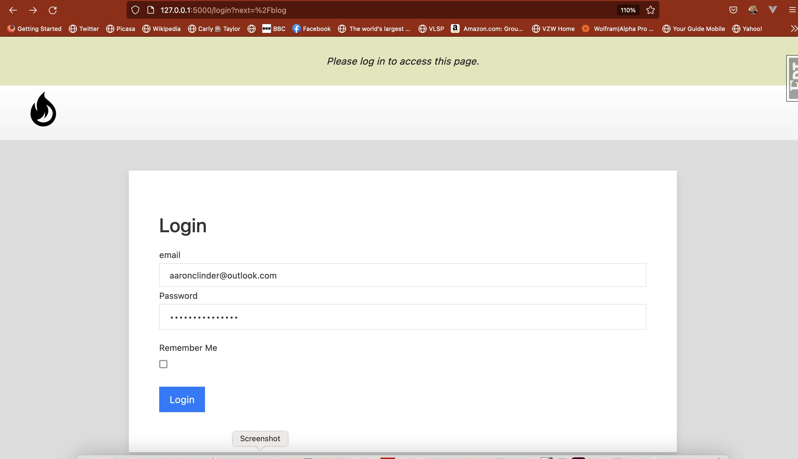
X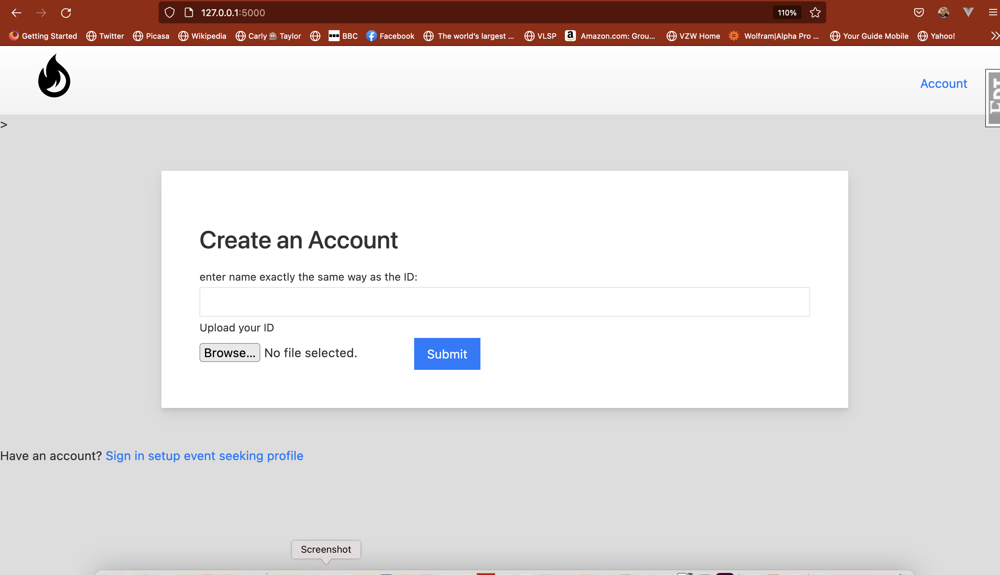
X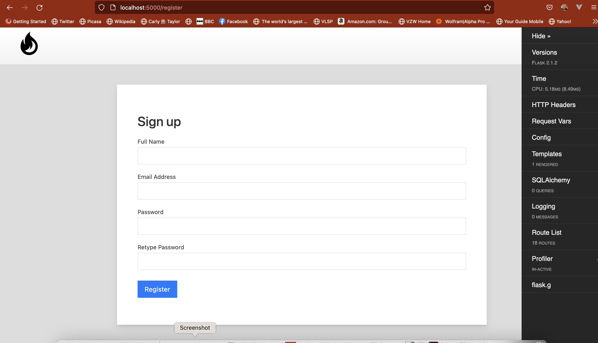
X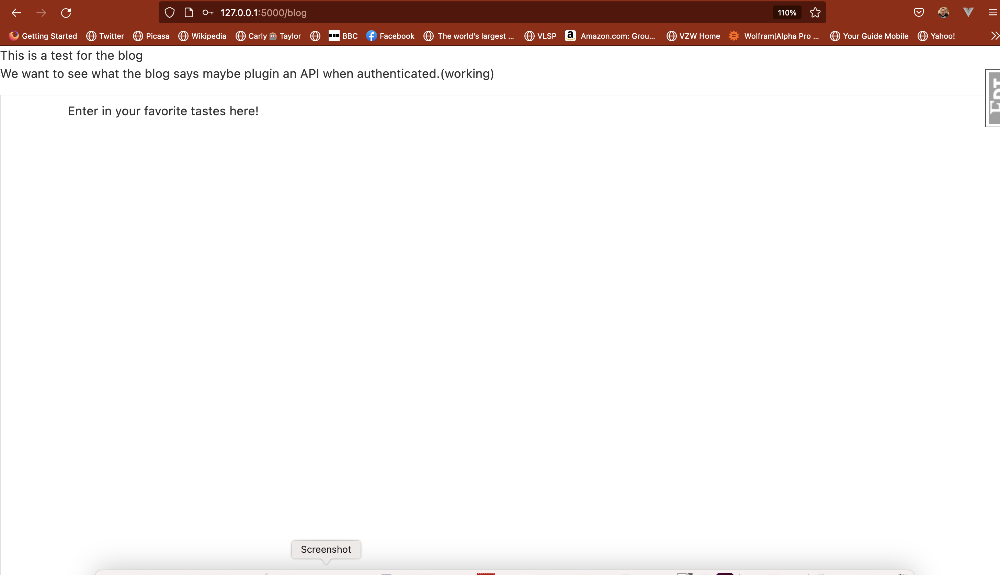
X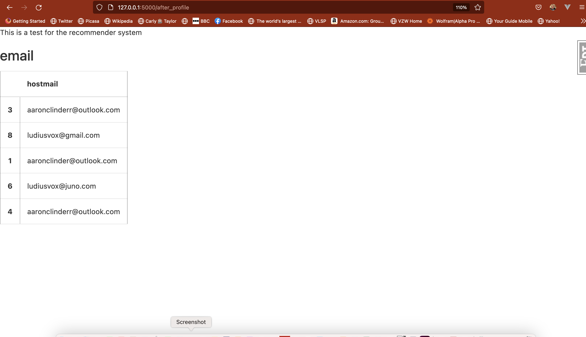
TODO:
show event description, including date and time (Not separate fields), not using Date Logic, up to the user to see what his schedule is.
X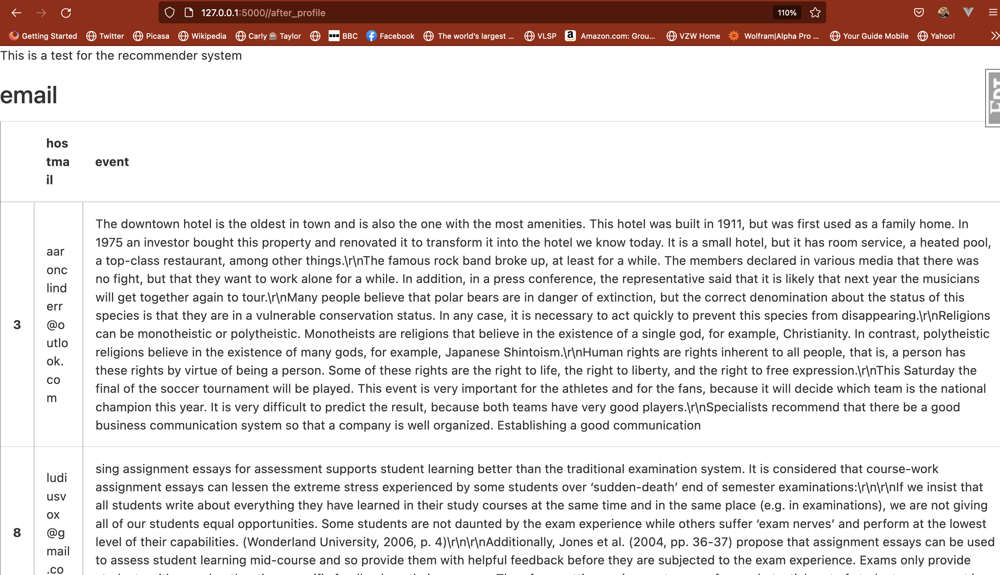
TODO:
Fix the spacing on the grid (Cosine hidden as requested previously)...(I think that the spacing is improved last time I checked)
7. Conclusion
There is a lot of exceptions in this program that need to be made cases for. I don’t feel the software is complete (It needs some):
form validations for User profile text box
form validations for Event profile text box
White space at the beginning of the file is throwing an exceptions for the NLP interpreter
The CNN for reading drivers license needs improved image pre-processing.
I feel like the OCR pre-processing isn’t accurate enough, and would need to be worked on for industrial usage (Or a Google API to google lens) Logins: The system has a secure login, the user shall be able to sign up with a government issued ID (identification) which will use OCR (Optical Character recognition), to read the name off of the license with 65% precision (precision low to account for free API (application programming interface) OCR using Tesseract-OCR package designed by Hewlett Packard, and wrapped in pytesseract package. In a few years there will be a nationwide standard ID with API’s that can call the DL# and verify it’s information. It is not a matter of development but the states have time to implement (Live ID or the “star” in the DL)